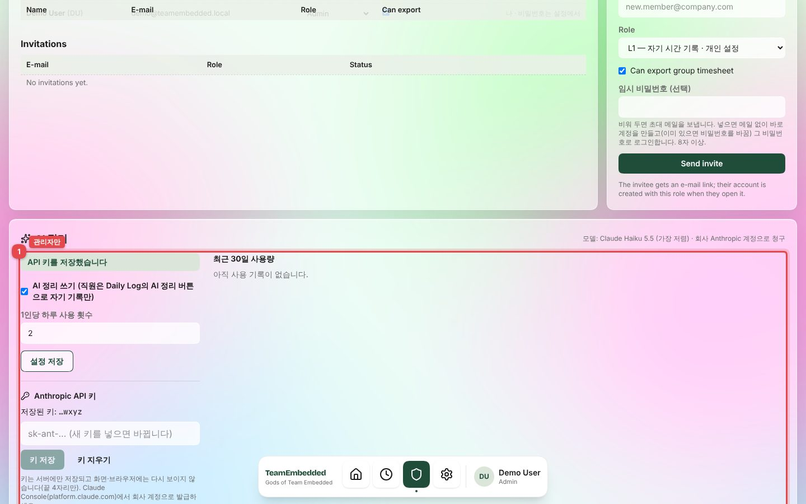
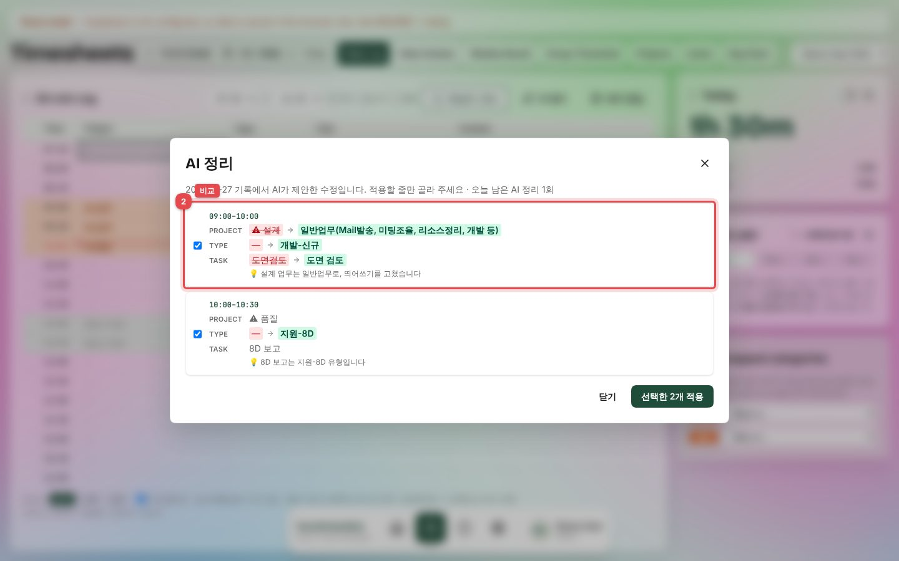
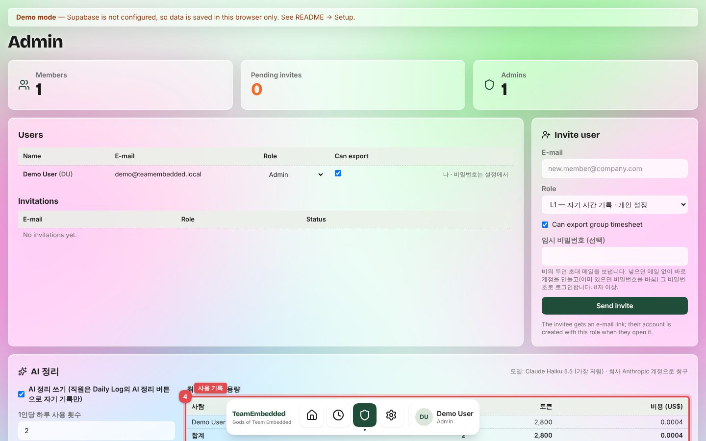
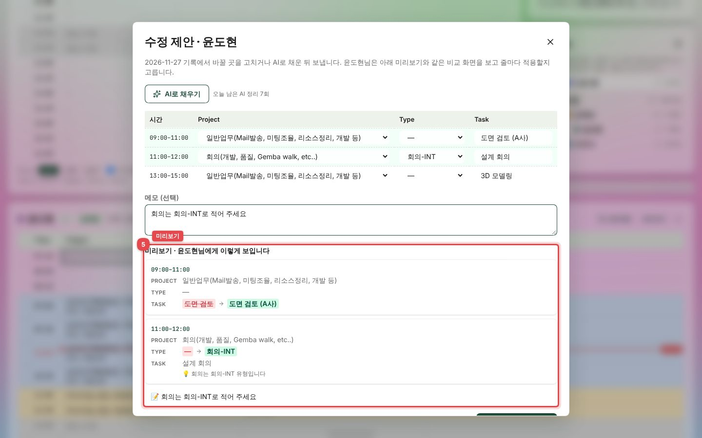
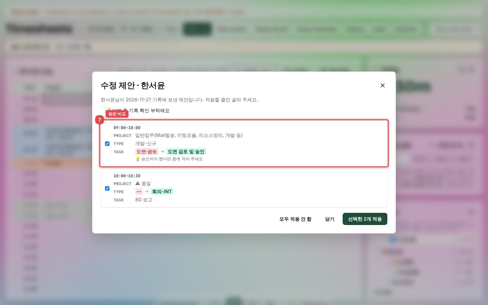

검증 보고서 · E2E
관리자 화면에만 AI API 키를 넣고, 가장 싼 모델로 운영. 1인당 하루 사용 횟수 제한, 누가 얼마나 썼는지 기록. 직원이 AI 정리를 누르면 Task·Project·Type 수정 제안 → 확인 후 적용(자기 기록만). 관리자·상위자가 diff로 수정 제안을 보내고, 담당자도 diff로 비교해 적용.
| # | 테스트 케이스 | 기대 결과 | 실제 결과 | 판정 근거 (Assertion) | 결과 | 증적 |
|---|---|---|---|---|---|---|
| 1 | AI 설정은 관리자 화면에만, 키는 끝 4자리만 보임 | 끄기 전 Daily Log 버튼 0개, 개인 설정 AI 칸 0개, 키 저장 후 '저장된 키: …wxyz', 입력칸 비움, 저장된 자료에 키 원문 없음 | 버튼 0개, 설정 AI 칸 0개, '저장된 키: …wxyz', 입력칸 '', 원문 저장 false | AI 정리 버튼 수 0, Settings 의 'AI provider' 0, ai-key-hint 글자, localStorage 에 KEY 없음 | PASS | 화면 1 |
| 2 | AI 정리: 바뀌는 칸만 지운 글자 → 새 글자로 | 2줄, 첫 줄 project·type·task 모두 바뀜(⚠ 설계 → 일반업무…, — → 개발-신규, 도면검토 → 도면 검토), 둘째 줄은 type만 | 바뀐 칸 [project,type,task / type] · 전 [⚠ 설계, —, 도면검토] · 후 [일반업무(Mail발송, 미팅조율, 리소스정리, 개발 등), 개발-신규, 도면 검토] | diff-item 의 data-changed, del/ins(data-side) 글자 | PASS | 화면 2 |
| 3 | 고른 줄만 적용 (Ctrl+Z로 되돌리기 가능) | 09:00·09:30은 일반업무 · 개발-신규 · '도면 검토', 10:00(체크 해제)은 Type 그대로 비어 있음, '1개 적용했습니다' | 09:00 '일반업무(Mail발송, 미팅조율, 리소스정리, 개발 등)', 09:30 Task '도면 검토', 09:00 Type '개발-신규', 10:00 Type '', 안내 '1개 적용했습니다 (Ctrl+Z로 되돌리기)' | Daily Log 칸 글자와 안내 문구 | PASS | — |
| 4 | 사용 기록(사람별 횟수·토큰·비용)과 하루 횟수 제한 | 2회 쓴 뒤 3번째는 '오늘 AI 정리 2회를 모두 썼습니다', 서버 호출 2번, 관리자 표 Demo User 오늘 2/2 · 2회 · 2,800토큰 · 0.0004 | 안내 '오늘 AI 정리 2회를 모두 썼습니다. 내일 다시 쓸 수 있습니다.', 호출 2번, 표 'Demo User 2 / 2 2 2,800 0.0004' | alert 문구, /api/ai/cleanup 호출 수, ai-usage-row 글자 | PASS | 화면 3 |
| 5 | 수정 제안 만들기: 직접 고치기 + AI로 채우기, 받는 사람 화면 미리보기 | 미리보기 2줄: 09:00 Task(직접 고침), 11:00 Type(AI가 채움), 메모 포함 | 미리보기 [task / type], 메모 '회의는 회의-INT로 적어 주세요' | proposal-preview 안 diff-item 의 data-changed | PASS | 화면 4 |
| 6 | 제안을 보내면 조직도에 보낸 제안(기다리는 중) | 저장된 제안: 윤도현, 2줄, AI 사용, 메모; 조직도에 '윤도현 … 2줄 · AI … 기다리는 중' | 저장 2줄, AI true, 메모 '회의는 회의-INT로 적어 주세요' · 조직도 '윤도현 2026-11-27 · 2줄 · AI 기다리는 중 비교 보기 취소' | localStorage proposals 와 sent-proposal 글자 | PASS | — |
| 7 | 받은 사람: Daily Log에 알림 → 같은 비교 화면 → 고른 줄만 적용 | 알림 '받은 수정 제안 1건 · 한서윤 · 2줄', 메모 보임, 적용 후 09:00 Task '도면 검토 및 승인', 제안은 answered [0], 알림 사라짐 | 알림 '받은 수정 제안 1건 11/27 · 한서윤 · 2줄', 메모 1개, 09:00 '도면 검토 및 승인', 상태 answered [0], 알림 0개 | proposal-banner 글자, 대화상자 메모, 칸 글자, localStorage 제안 상태 | PASS | — |
| 8 | L2: 아래 L1에게만 제안 (같은 등급 L2는 팀원 창에도 없음) | 팀원 창에 오하린(L2) 없음, 보이는 L1 기록마다 수정 제안 버튼 | 팀원 창 [윤도현, 강민호, 서지아], 기록 [윤도현], 버튼 1개 | 팀원 창 이름, team-sheet 수와 수정 제안 버튼 수가 같음 | PASS | — |
| 9 | 페이지 오류 없음 | 0건 | 0건 | pageerror 수 === 0 | PASS | — |
빨간 테두리와 번호는 표의 테스트 케이스 번호입니다. 그 요소를 확인해 판정했습니다.




